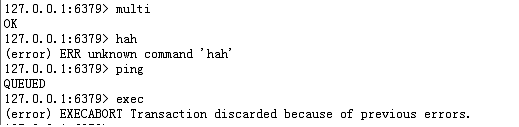
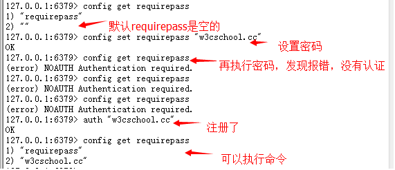

redis是一个开源的，使用ANSI C语言编写、遵守BSD协议、支持网络、可基于内存亦可持久化的日志型、Key-Value数据库，并提供多种语言的API。
它通常被称为 数据结构服务器，因为值（value）可以是： 字符串(String), 哈希(Map), 列表(list), 集合(sets) 和 有序集合(sorted sets)等类型。
redis的官网地址，非常好记，是redis.io。（域名后缀io属于国家域名，是british Indian Ocean territory，即英属印度洋领地）
目前，Vmware在资助着redis项目的开发和维护。
redis作者Salvatore Sanfilippo，网名是antirez，博客 antirez.com ,他的github地址 github.com/antirez 。
----------------------------------------
Redis 与其他 key - value 缓存产品有以下三个特点：
1. redis支持数据的持久化，可以将内存中的数据保持在磁盘中，重启的时候可以再次加载进行使用。
2. Redis不仅仅支持简单的key-value类型的数据，同时还提供list，set，zset，hash等数据结构的存储。
3. Redis支持数据的备份，即master-slave模式的数据备份。
redis官方网址
本次以redis-2.8.15为例。
一 下载redis
下载到的目录必须是有写权限的目录。
[yanli@FirstPro Downloads]%HTML_CONTENT%nbsp;wget http://download.redis.io/releases/redis-2.8.15.tar.gz
--2016-01-20 15:01:54-- http://download.redis.io/releases/redis-2.8.15.tar.gz
Resolving download.redis.io... 109.74.203.151
Connecting to download.redis.io|109.74.203.151|:80... connected.
HTTP request sent, awaiting response... 200 OK
Length: 1233621 (1.2M) [application/x-gzip]
Saving to: "redis-2.8.15.tar.gz"
100%[=====================================>] 1,233,621 58.0K/s in 18s
2016-01-20 15:02:15 (66.5 KB/s) - "redis-2.8.15.tar.gz" saved [1233621/1233621]
[yanli@FirstPro Downloads]%HTML_CONTENT%nbsp;
二 解压redis tar包
%HTML_CONTENT%nbsp;tar -zxvf redis-2.8.15.tar.gz
三 编译
%HTML_CONTENT%nbsp;cd redis-2.8.15
%HTML_CONTENT%nbsp;make
make完后 redis-2.8.17目录下会出现编译后的redis服务程序redis-server,还有用于测试的客户端程序redis-cli,两个程序位于安装目录 src 目录下，另外还会产生一些二进制可执行文件。
[yanli@FirstPro src]%HTML_CONTENT%nbsp;find . -type f -executable
./mkreleasehdr.sh
./redis-sentinel //用于集群管理
./redis-benchmark //用于进行redis性能测试的工具
./redis-check-dump //用于修复出问题的dump.rdb文件
./redis-server //redis的服务端
./redis-cli //redis的客户端
./redis-check-aof //用于修复出问题的AOF文件
[yanli@FirstPro src]%HTML_CONTENT%nbsp;
四 启动redis
[yanli@FirstPro redis-2.8.15]%HTML_CONTENT%nbsp;cd src
[yanli@FirstPro src]%HTML_CONTENT%nbsp;./redis-server
启动是前台启动，会占用控制台页面。需要进行其他操作，必须重新开一个窗口。
注意这种方式启动redis 使用的是默认配置。也可以通过启动参数告诉redis使用指定配置文件使用下面命令启动。
%HTML_CONTENT%nbsp;./redis-server ../redis.conf
默认情况下，redis-server会以非daemon的方式来运行，且默认服务端口为6379。
//通过客户端来关闭redis服务端
127.0.0.1:6379> shutdown
五 在远程服务器上执行命令
如果需要在远程 redis 服务上执行命令，同样我们使用的也是 redis-cli 命令。
%HTML_CONTENT%nbsp;redis-cli -h host -p port -a password
测试用例：
执行 PING 命令，该命令用于检测 redis 服务是否启动。
Redis 的配置文件位于 Redis 安装目录下，文件名为 redis.conf。
通过 CONFIG 命令查看或设置配置项。
127.0.0.1:6379> CONFIG GET loglevel
1) "loglevel"
2) "notice"
使用 * 号获取所有配置项：redis 127.0.0.1:6379> CONFIG GET *
----------------------------------------
编辑配置
通过修改 redis.conf 文件或使用 CONFIG set 命令来修改配置。
CONFIG SET 命令基本语法：redis 127.0.0.1:6379> CONFIG SET CONFIG_SETTING_NAME NEW_CONFIG_VALUE
实例
----------------------------------------
参数说明
redis.conf 配置项说明如下：
1. Redis默认不是以守护进程的方式运行，可以通过该配置项修改，使用yes启用守护进程
daemonize no
2. 当Redis以守护进程方式运行时，Redis默认会把pid写入/var/run/redis.pid文件，可以通过pidfile指定
pidfile /var/run/redis.pid
3. 指定Redis监听端口，默认端口为6379，作者在自己的一篇博文中解释了为什么选用6379作为默认端口，因为6379在手机按键上MERZ对应的号码，而MERZ取自意大利歌女Alessia Merz的名字
port 6379
4. 绑定的主机地址
bind 127.0.0.1
5.当 客户端闲置多长时间后关闭连接，如果指定为0，表示关闭该功能
timeout 300
6. 指定日志记录级别，Redis总共支持四个级别：debug、verbose、notice、warning，默认为verbose
loglevel verbose
7. 日志记录方式，默认为标准输出，如果配置Redis为守护进程方式运行，而这里又配置为日志记录方式为标准输出，则日志将会发送给/dev/null
logfile stdout
8. 设置数据库的数量，默认数据库为0，可以使用SELECT <dbid>命令在连接上指定数据库id
databases 16
9. 指定在多长时间内，有多少次更新操作，就将数据同步到数据文件，可以多个条件配合
save <seconds> <changes>
Redis默认配置文件中提供了三个条件：
save 900 1
save 300 10
save 60 10000
分别表示900秒（15分钟）内有1个更改，300秒（5分钟）内有10个更改以及60秒内有10000个更改。
10. 指定存储至本地数据库时是否压缩数据，默认为yes，Redis采用LZF压缩，如果为了节省CPU时间，可以关闭该选项，但会导致数据库文件变的巨大
rdbcompression yes
11. 指定本地数据库文件名，默认值为dump.rdb
dbfilename dump.rdb
12. 指定本地数据库存放目录
dir ./
13. 设置当本机为slav服务时，设置master服务的IP地址及端口，在Redis启动时，它会自动从master进行数据同步
slaveof <masterip> <masterport>
默认是禁掉的。
14. 当master服务设置了密码保护时，slav服务连接master的密码
masterauth <master-password>
15. 设置Redis连接密码，如果配置了连接密码，客户端在连接Redis时需要通过AUTH <password>命令提供密码，默认关闭
requirepass foobared
16. 设置同一时间最大客户端连接数，默认无限制，Redis可以同时打开的客户端连接数为Redis进程可以打开的最大文件描述符数，如果设置 maxclients 0，表示不作限制。当客户端连接数到达限制时，Redis会关闭新的连接并向客户端返回max number of clients reached错误信息
maxclients 128
这里提到的客户端数，应该是不同ip的链接。不是指开启的操作界面的数量。
17. 指定Redis最大内存限制，Redis在启动时会把数据加载到内存中，达到最大内存后，Redis会先尝试清除已到期或即将到期的Key，当此方法处理 后，仍然到达最大内存设置，将无法再进行写入操作，但仍然可以进行读取操作。Redis新的vm机制，会把Key存放内存，Value会存放在swap区
maxmemory <bytes>
18. 指定是否在每次更新操作后进行日志记录，Redis在默认情况下是异步的把数据写入磁盘，如果不开启，可能会在断电时导致一段时间内的数据丢失。因为 redis本身同步数据文件是按上面save条件来同步的，所以有的数据会在一段时间内只存在于内存中。默认为no
appendonly no
19. 指定更新日志文件名，默认为appendonly.aof
appendfilename appendonly.aof
20. 指定更新日志条件，共有3个可选值：
no ：表示等操作系统进行数据缓存同步到磁盘（快）
always ：表示每次更新操作后手动调用fsync()将数据写到磁盘（慢，安全）
everysec ：表示每秒同步一次（折衷，默认值）
appendfsync everysec
21. 指定是否启用虚拟内存机制，默认值为no，简单的介绍一下，VM机制将数据分页存放，由Redis将访问量较少的页即冷数据swap到磁盘上，访问多的页面由磁盘自动换出到内存中**
vm-enabled no
22. 虚拟内存文件路径，默认值为/tmp/redis.swap，不可多个Redis实例共享
vm-swap-file /tmp/redis.swap
查看redis.conf并没有此参数。
23. 将所有大于vm-max-memory的数据存入虚拟内存,无论vm-max-memory设置多小,所有索引数据都是内存存储的(Redis的索引数据 就是keys),也就是说,当vm-max-memory设置为0的时候,其实是所有value都存在于磁盘。默认值为0
vm-max-memory 0
24. Redis swap文件分成了很多的page，一个对象可以保存在多个page上面，但一个page上不能被多个对象共享，vm-page-size是要根据存储的 数据大小来设定的，
编者建议：
（1）如果存储很多小对象，page大小最好设置为32或者64bytes；
（2）如果存储很大大对象，则可以使用更大的page，
（3）如果不 确定，就使用默认值
vm-page-size 32
25. 设置swap文件中的page数量，由于页表（一种表示页面空闲或使用的bitmap）是在放在内存中的，，在磁盘上每8个pages将消耗1byte的内存。
vm-pages 134217728
26. 设置访问swap文件的线程数,最好不要超过机器的核数,如果设置为0,那么所有对swap文件的操作都是串行的，可能会造成比较长时间的延迟。默认值为4
vm-max-threads 4
27. 设置在向客户端应答时，是否把较小的包合并为一个包发送，默认为开启
glueoutputbuf yes
28. 指定在超过一定的数量或者最大的元素超过某一临界值时，采用一种特殊的哈希算法
hash-max-zipmap-entries 64
hash-max-zipmap-value 512
29. 指定是否激活重置哈希，默认为开启
activerehashing yes
30. 指定包含其它的配置文件，可以在同一主机上多个Redis实例之间使用同一份配置文件，而同时各个实例又拥有自己的特定配置文件
include /path/to/local.conf
PS vm相关参数在默认的redis.conf是没有的。启动内存机制才会有的？
用于管理redis的键。
测试用例：
127.0.0.1:6379> set s3ckey ok
OK
127.0.0.1:6379> get s3ckey
"ok"
127.0.0.1:6379> del s3ckey //键被删除成功，命令执行后输出 (integer) 1，否则将输出 (integer) 0
(integer) 1
127.0.0.1:6379> get s3ckey
(nil)
127.0.0.1:6379> keys * //查询当前数据库中所有的key
Redis 键相关的基本命令：
1 DEL key
该命令用于在 key 存在是删除 key。
2 DUMP key
序列化给定 key ，并返回被序列化的值。
3 EXISTS key
检查给定 key 是否存在。
4 EXPIRE key seconds
为给定 key 设置过期时间。
5 EXPIREAT key timestamp
EXPIREAT 的作用和 EXPIRE 类似，都用于为 key 设置过期时间。 不同在于 EXPIREAT 命令接受的时间参数是 UNIX 时间戳(unix timestamp)。
6 PEXPIRE key milliseconds
设置 key 的过期时间亿以毫秒计。
7 PEXPIREAT key milliseconds-timestamp
设置 key 过期时间的时间戳(unix timestamp) 以毫秒计
8 KEYS pattern
查找所有符合给定模式( pattern)的 key 。
9 MOVE key db
将当前数据库的 key 移动到给定的数据库 db 当中。
10 PERSIST key
移除 key 的过期时间，key 将持久保持。
11 PTTL key
以毫秒为单位返回 key 的剩余的过期时间。
12 TTL key
以秒为单位，返回给定 key 的剩余生存时间(TTL, time to live)。
当 key 不存在时，返回 -2 。
当 key 存在但没有设置剩余生存时间时，返回 -1 。
否则，以秒为单位，返回 key 的剩余生存时间。
13 RANDOMKEY
从当前数据库中随机返回一个 key 。
14 RENAME key newkey
修改 key 的名称
15 RENAMENX key newkey
仅当 newkey 不存在时，将 key 改名为 newkey 。
16 TYPE key
返回 key 所储存的值的类型。
17 Keys *
返回当前数据库中所有的key
简介
redis是一种高级的key:value存储系统，其中value支持五种数据类型：
字符串（strings）
字符串列表（lists）
字符串集合（sets）
有序字符串集合（sorted sets）
哈希（hashes）
关于key，需要注意：
key不要太长，尽量不要超过1024字节，这不仅消耗内存，而且会降低查找的效率；
key也不要太短，太短的话，key的可读性会降低；
在一个项目中，key最好使用统一的命名模式，例如user:10000:passwd。
----------------------------------------
redis数据结构 - strings
string是redis最基本的类型，可以理解成与Memcached一模一样的类型，一个key对应一个value。
string类型是二进制安全的。意思是redis的string可以包含任何数据。比如jpg图片或者序列化的对象 。
string类型是Redis最基本的数据类型，一个键最大能存储512MB。
测试用例：
127.0.0.1:6379> set w3ckey redis //设置指定 key 的值
OK
127.0.0.1:6379> get w3ckey //获取指定 key 的值
"redis"
127.0.0.1:6379> getrange w3ckey 1 3 //返回 key 中字符串值的子字符,从0计数
127.0.0.1:6379> getrange w3ckey 0 2
"red"
127.0.0.1:6379> getrange w3ckey 0 3
"redi"
127.0.0.1:6379> getrange w3ckey 0 4
"redis"
127.0.0.1:6379> getrange w3ckey 0 5
"redis"
127.0.0.1:6379> getrange w3ckey 0 6
"redis"
127.0.0.1:6379> getset w3ckey mem //将给定 key 的值设为 value ，并返回 key 的旧值(old value)。
"redis"
127.0.0.1:6379> get w3ckey
"mem"
127.0.0.1:6379> set name huahua
OK
127.0.0.1:6379> mget name w3ckey //获取所有(一个或多个)给定 key 的值。
1) "huahua"
2) "mem"
127.0.0.1:6379> setex age 60 12 //将值 value 关联到 key ，并将 key 的过期时间设为 seconds (以秒为单位)。
//把age值设为12，过期时间设为60秒，如果过期了，这个age将不存在。
127.0.0.1:6379> keys *
1) "age"
2) "w3ckey"
3) "name"
127.0.0.1:6379> keys *
1) "w3ckey"
2) "name"
PSETEX key milliseconds value //这个命令和 SETEX 命令相似，但它以毫秒为单位设置 key 的生存时间，而不是像 SETEX 命令那样，以秒为单位。
127.0.0.1:6379> setnx name test //只有在 key 不存在时设置 key 的值。已经存在的key，将设置不成功
(integer) 0
127.0.0.1:6379> get name
"huahua"
127.0.0.1:6379> setnx age 10
(integer) 1
127.0.0.1:6379> get age
"10"
127.0.0.1:6379> setrange name 0 mmm //用 value 参数覆写给定 key 所储存的字符串值，从偏移量 offset 开始
(integer) 6
127.0.0.1:6379> get name
"mmmhua"
127.0.0.1:6379> get w3ckey
"mem"
127.0.0.1:6379> strlen w3ckey //返回 key 所储存的字符串值的长度
(integer) 3
127.0.0.1:6379> mset key1 test1 key2 test2 key3 test3 //同时设置一个或多个 key-value 对
OK
127.0.0.1:6379> mset key1 abc key4 abc4 //mset设置 会把已有的key值改变
OK
127.0.0.1:6379> get key1
"abc"
127.0.0.1:6379> msetnx key4 abcnx key5 abcnx5 //同时设置一个或多个 key-value 对，当且仅当所有给定 key 都不存在。
(integer) 0
127.0.0.1:6379> get key4 //key4存在，设置不成功；而且key5也会设置不成功，key4还是原来的值，key5 为空
"abc4"
127.0.0.1:6379> get key5
(nil)
127.0.0.1:6379> incr age //将 key 中储存的数字值增一
(integer) 11
127.0.0.1:6379> incr key1
(error) ERR value is not an integer or out of range
127.0.0.1:6379> incrby age 3 //将 key 所储存的值加上给定的增量值（increment）
(integer) 14 //不可以增加浮点数
127.0.0.1:6379> incrby key1 3
(error) ERR value is not an integer or out of range
127.0.0.1:6379> incrby age 0.5
(error) ERR value is not an integer or out of range
127.0.0.1:6379> incrbyfloat age 0.5 //将 key 所储存的值加上给定的浮点增量值（increment）
"14.5"
127.0.0.1:6379> get key1
"abc"
127.0.0.1:6379> append key1 def //如果 key 已经存在并且是一个字符串， APPEND 命令将 value 追加到 key 原来的值的末尾
(integer) 6
127.0.0.1:6379> get key1
"abcdef"
DECR key
将 key 中储存的数字值减一。
DECRBY key decrement
key 所储存的值减去给定的减量值（decrement） 。
注意：
在遇到数值操作时，redis会将字符串类型转换成数值。
由于INCR等指令本身就具有原子操作的特性，所以我们完全可以利用redis的INCR、INCRBY、DECR、DECRBY等指令来实现原子计数的效果。
假如，在某种场景下有3个客户端同时读取了mynum的值（值为2），然后对其同时进行了加1的操作，那么，最后mynum的值一定是5。
----------------------------------------
redis数据结构 - Hash
Redis hash 是一个键值对集合。
Redis hash是一个string类型的field和value的映射表，hash特别适合用于存储对象。
每个 hash 可以存储 2 32 - 1 键值对（40多亿）。
实例：
1.如果哈希表不存在，一个新的哈希表被创建并进行 HSET 操作。
如果字段已经存在于哈希表中，旧值将被覆盖。
返回值：如果字段是哈希表中的一个新建字段，并且值设置成功，返回 1 。 如果哈希表中域字段已经存在且旧值已被新值覆盖，返回 0 。
127.0.0.1:6379> HSET myhash field1 "foo"
(integer) 1
127.0.0.1:6379> HGET myhash field1
"foo"
2.Redis Hgetall 命令用于返回哈希表中，所有的字段和值。
在返回值里，紧跟每个字段名(field name)之后是字段的值(value)，所以返回值的长度是哈希表大小的两倍。
127.0.0.1:6379> hgetall myhash
1) "field1"
2) "foo"
3) "field2"
4) "hi"
3.Redis Hdel 命令用于删除哈希表 key 中的一个或多个指定字段，不存在的字段将被忽略。
127.0.0.1:6379> HDEL myhash field2
(integer) 1
127.0.0.1:6379> HDEL myhash field2
(integer) 0
4.判断某个字段是否存在，存在返回1，不存在返回0.
127.0.0.1:6379> HEXISTS myhash field2
(integer) 0
127.0.0.1:6379> HEXISTS myhash field1
(integer) 1
5. Hkeys 命令用于获取哈希表中的所有字段名
127.0.0.1:6379> HKEYS myhash
1) "field1"
2) "filed2"
6. HINCRBY key field increment
为哈希表 key 中的指定字段的整数值加上增量 increment 。
7. HINCRBYFLOAT key field increment
为哈希表 key 中的指定字段的浮点数值加上增量 increment 。
8. HLEN key
获取哈希表中字段的数量
9. HMGET key field1 [field2]
获取所有给定字段的值
10. HMSET key field1 value1 [field2 value2 ]
同时将多个 field-value (域-值)对设置到哈希表 key 中。
11. HSET key field value
将哈希表 key 中的字段 field 的值设为 value 。
12. HSETNX key field value
只有在字段 field 不存在时，设置哈希表字段的值。
13. HVALS key
获取哈希表中所有值
运用场景：
hashes存的是字符串和字符串值之间的映射，比如一个用户要存储其全名、姓氏、年龄等等，就很适合使用哈希。
----------------------------------------------------------
redis数据结构 - List
Redis 列表是简单的字符串列表，按照插入顺序排序。你可以添加一个元素导入列表的头部（左边）或者尾部（右边）。
列表最多可存储 2 32 - 1 元素 (4294967295, 每个列表可存储40多亿)。
实例：
1. LPUSH key value1 [value2]
将一个或多个值插入到列表头部。
127.0.0.1:6379> lpush w3ckey redis
(integer) 1
127.0.0.1:6379> keys *
1) "w3ckey"
127.0.0.1:6379> get w3ckey //列表不能用字符串的get获取
(error) WRONGTYPE Operation against a key holding the wrong kind of value
127.0.0.1:6379> lpush w3ckey mongodb mysql
(integer) 3
127.0.0.1:6379> lrange w3ckey 0 3 //获取字符串
1) "mysql"
2) "mongodb"
3) "redis"
2. Blpop 命令移出并获取列表的第一个元素， 如果列表没有元素会阻塞列表直到等待超时或发现可弹出元素为止。
返回值：如果列表为空，返回一个 nil 。 否则，返回一个含有两个元素的列表，第一个元素是被弹出元素所属的 key ，第二个元素是被弹出元素的值。
举例：
127.0.0.1:6379> lrange w3ckey 0 5
1) "mongodb"
2) "redis"
127.0.0.1:6379> blpop w3ckey 1
1) "w3ckey"
2) "mongodb"
127.0.0.1:6379> lrange w3ckey 0 5
1) "redis"
127.0.0.1:6379>
一定注意，不要获取不存在的列表key，否则会阻塞，最后返回超时。或者等发现可弹出元素为之。
3. Brpop 命令移出并获取列表的最后一个元素， 如果列表没有元素会阻塞列表直到等待超时或发现可弹出元素为止。
返回：假如在指定时间内没有任何元素被弹出，则返回一个 nil 和等待时长。 反之，返回一个含有两个元素的列表，第一个元素是被弹出元素所属的 key ，第二个元素是被弹出元素的值。
127.0.0.1:6379> brpop w3ckey 1
1) "w3ckey"
2) "redis"
4. BRPOPLPUSH source destination timeout
从列表中弹出一个值，将弹出的元素插入到另外一个列表中并返回它； 如果列表没有元素会阻塞列表直到等待超时或发现可弹出元素为止。
timeout这个参数经测试不起作用的。
将列表 source 中的最后一个元素(尾元素)弹出，并返回给客户端。
将 source 弹出的元素插入到列表 destination ，作为 destination 列表的的头元素。
5. LINDEX key index
通过索引获取列表中的元素
127.0.0.1:6379> lrange test 0 5
1) "mysql"
2) "mongo"
3) "reids"
127.0.0.1:6379> lindex test 1
"mongo"
127.0.0.1:6379> lindex test 0
"mysql"
127.0.0.1:6379> lindex test 3
(nil)
6. LINSERT key BEFORE|AFTER pivot value
在列表的元素前或者后插入元素
127.0.0.1:6379> linsert list2 before "bar" "yes"
(integer) 3
127.0.0.1:6379> lrange list2 0 5
1) "yes"
2) "bar"
3) "foo"127.0.0.1:6379> linsert list2 after "bar" "yes"
(integer) 4
127.0.0.1:6379> lrange list2 0 5
1) "yes"
2) "bar"
3) "yes"
4) "foo"
7. LPOP key
移出并获取列表的第一个元素
8. RPOP key
移除并获取列表最后一个元素
9. LPUSH key value1 [value2]
将一个或多个值插入到列表头部
10. LPUSHX key value
将一个或多个值插入到已存在的列表头部
127.0.0.1:6379> lpushx list3 vv
(integer) 0
127.0.0.1:6379> lpushx list2 vv
(integer) 5
127.0.0.1:6379> lrange list2 0 5
1) "vv"
2) "yes"
3) "bar"
4) "yes"
5) "foo"
127.0.0.1:6379>
11. LREM key count value
移除列表元素
Lrem 根据参数 COUNT 的值，移除列表中与参数 VALUE 相等的元素。
COUNT 的值可以是以下几种：
count > 0 : 从表头开始向表尾搜索，移除与 VALUE 相等的元素，数量为 COUNT 。
count < 0 : 从表尾开始向表头搜索，移除与 VALUE 相等的元素，数量为 COUNT 的绝对值。
count = 0 : 移除表中所有与 VALUE 相等的值。
127.0.0.1:6379> lrem list2 0 yes
(integer) 2
127.0.0.1:6379> lrange list2 0 5
1) "vv"
2) "bar"
12. LSET key index value
通过索引设置列表元素的值
13. LTRIM key start stop
对一个列表进行修剪(trim)，就是说，让列表只保留指定区间内的元素，不在指定区间之内的元素都将被删除。
下标 0 表示列表的第一个元素，以 1 表示列表的第二个元素，以此类推。
你也可以使用负数下标，以 -1 表示列表的最后一个元素， -2 表示列表的倒数第二个元素，以此类推。
14. RPOPLPUSH source destination
移除列表的最后一个元素，并将该元素添加到另一个列表并返回
15. RPUSH key value1 [value2]
在列表中添加一个或多个值
16.RPUSHX key value
为已存在的列表添加值
要明确一点，redis中的lists在底层实现上并不是数组，而是链表。
也就是说对于一个具有上百万个元素的lists来说，在头部和尾部插入一个新元素，其时间复杂度是常数级别的，比如用LPUSH在10个元素的lists头部插入新元素，和在上千万元素的lists头部插入新元素的速度应该是相同的。
链表型lists的元素定位会比较慢，而数组型lists的元素定位就会快得多。
lists的应用相当广泛，随便举几个例子：
我们可以利用lists来实现一个消息队列，而且可以确保先后顺序，不必像MySQL那样还需要通过ORDER BY来进行排序。
利用LRANGE还可以很方便的实现分页的功能。
在博客系统中，每片博文的评论也可以存入一个单独的list中。
----------------------------------------
redis数据结构 - set
Redis的Set是string类型的无序集合。
集合是通过哈希表实现的，所以添加，删除，查找的复杂度都是O(1)。
集合内元素的唯一性，第二次插入相同的元素将被忽略。
集合中最大的成员数为 2 32 - 1 (4294967295, 每个集合可存储40多亿个成员)。
测试用例：
127.0.0.1:6379> SADD setarr v1 //向集合添加一个或多个成员
(integer) 1
127.0.0.1:6379> SADD setarr v2 v3
(integer) 2
127.0.0.1:6379> smembers setarr //返回集合中的所有成员
1) "v2"
2) "v3"
3) "v1"
127.0.0.1:6379> scard setarr //获取集合的成员数
(integer) 3
127.0.0.1:6379> sadd setarr1 v1 vv1 k1
(integer) 3
127.0.0.1:6379> sdiff setarr setarr1 //返回给定所有集合的差集 返回setarr中不同于setarr1的
1) "v2"
2) "v3"
127.0.0.1:6379> sdiff setarr1 setarr //返回setarr1中不同于setarr的
1) "vv1"
2) "k1"
127.0.0.1:6379> sdiffstore cha setarr setarr1 //返回给定所有集合的差集并存储在 cha或者cha1 中
(integer) 2
127.0.0.1:6379> smembers cha
1) "v2"
2) "v3"
127.0.0.1:6379> sdiffstore cha1 setarr1 setarr
(integer) 2
127.0.0.1:6379> smembers cha1
1) "vv1"
2) "k1"
//判断 member 元素是否是集合 key 的成员
127.0.0.1:6379> sismember setarr vv1 //不是setarr成员，返回0
(integer) 0
127.0.0.1:6379> sismember setarr v1 //是setarr成员的，返回1
(integer) 1
//SMOVE source destination member 将 member 元素从 source 集合移动到 destination 集合
127.0.0.1:6379> smembers setarr
1) "v2"
2) "v3"
3) "v1"
127.0.0.1:6379> smembers setarr1
1) "k1"
2) "vv1"
3) "v1"
127.0.0.1:6379> smove setarr1 setarr vv1
(integer) 1
127.0.0.1:6379> smembers setarr
1) "vv1"
2) "v2"
3) "v3"
4) "v1"
127.0.0.1:6379> smembers setarr1
1) "k1"
2) "v1"
//SPOP key 移除并返回集合中的一个随机元素
127.0.0.1:6379> smembers setarr
1) "vv1"
2) "v2"
3) "v3"
4) "v1"
127.0.0.1:6379> spop setarr
"v2"
127.0.0.1:6379> smembers setarr
1) "vv1"
2) "v3"
3) "v1"
//SRANDMEMBER key [count] 返回集合中一个或多个随机数
//只提供集合 key 参数时，返回一个元素； 如果提供了 count 参数，那么返回一个数组；如果集合为空，返回空数组。
//该操作和 SPOP 相似，但 SPOP 将随机元素从集合中移除并返回，而 Srandmember 则仅仅返回随机元素，而不对集合进行任何改动。
参数count的解释：
如果 count 为正数，且小于集合基数，那么命令返回一个包含 count 个元素的数组， 数组中的元素各不相同 。如果 count 大于等于集合基数，那么返回整个集合。
如果 count 为负数，那么命令返回一个数组， 数组中的元素可能会重复出现多次 ，而数组的长度为 count 的绝对值。
//SREM key member1 [member2] 移除集合中一个或多个成员
//SUNION key1 [key2] 返回所有给定集合的并集
//SUNIONSTORE destination key1 [key2] 所有给定集合的并集存储在 destination 集合中
//SSCAN key cursor [MATCH pattern] [COUNT count] 迭代集合中的元素
//SSCAN key cursor [MATCH pattern] [COUNT count] 迭代集合中的元素
127.0.0.1:6379> sscan setarr 0 match "v*"
1) "0"
2) 1) "vv1"
2) "v3"
3) "v1"
127.0.0.1:6379>
ps:SCAN 命令是一个基于游标的迭代器。这意味着命令每次被调用都需要使用上一次这个调用返回的游标作为该次调用的游标参数，以此来延续之前的迭代过程
当 SCAN 命令的游标参数被设置为 0 时， 服务器将开始一次新的迭代， 而当服务器向用户返回值为 0 的游标时， 表示迭代已结束。
运用场景：
QQ有一个社交功能叫做"好友标签"，大家可以给你的好友贴标签，比如"大美女"、"土豪"、"欧巴"等等，这时就可以使用redis的集合来实现，把每一个用户的标签都存储在一个集合之中。
----------------------------------------
redis数据结构 - zset
Redis zset 和 set 一样也是string类型元素的集合,且不允许重复的成员。
不同的是每个元素都会关联一个double类型的分数。redis正是通过分数来为集合中的成员进行从小到大的排序。
zset的成员是唯一的,但分数(score)却可以重复。
集合是通过哈希表实现的，所以添加，删除，查找的复杂度都是O(1)。 集合中最大的成员数为 2 32 - 1 (4294967295, 每个集合可存储40多亿个成员)。
实例：
向有序集合添加一个或多个成员，或者更新已存在成员的分数。
127.0.0.1:6379> zadd myset 1 hello
(integer) 1
127.0.0.1:6379> zadd myset 3 foo
(integer) 1
127.0.0.1:6379> zadd myset 2 bar
(integer) 1
127.0.0.1:6379> zrange myset 0 -1
1) "hello"
2) "bar"
3) "foo"
排列顺序是按照zadd添加的顺序来的。
127.0.0.1:6379> zcard myset //获取有序集合的成员数量
(integer) 3
127.0.0.1:6379> zadd myset 1.5 tt
(integer) 1
127.0.0.1:6379> zcount myset 1 3 //Zcount 命令用于计算有序集合中指定分数区间的成员数量。
(integer) 4
127.0.0.1:6379> zrange myset 0 -1
1) "hello"
2) "tt"
3) "bar"
4) "foo"
127.0.0.1:6379>
127.0.0.1:6379> zincrby myset 2 tt //Zincrby 命令对有序集合中指定成员的分数加上增量 increment
"3.5"
127.0.0.1:6379> zrange myset 0 -1
1) "hello"
2) "bar"
3) "foo"
4) "tt"
127.0.0.1:6379>
ZINTERSTORE destination numkeys key [key ...]
计算给定的一个或多个有序集的交集并将结果集存储在新的有序集合 key 中
Zlexcount 命令在计算有序集合中指定字典区间内成员数量。
127.0.0.1:6379> zrange myzset 0 -1
1) "a"
2) "b"
3) "c"
4) "d"
5) "e"
6) "f"
7) "g"
127.0.0.1:6379> ZLEXCOUNT myzset [b [f //b，c，d，e，f 共5个
(integer) 5
127.0.0.1:6379> ZLEXCOUNT myzset - + //计算全部的成员数量
(integer) 7
//ZRANGE key start stop [WITHSCORES]
通过索引区间返回有序集合成指定区间内的成员
//ZRANGEBYLEX key min max [LIMIT offset count]
通过字典区间返回有序集合的成员
下标参数 start 和 stop 都以 0 为底，也就是说，以 0 表示有序集第一个成员，以 1 表示有序集第二个成员，以此类推。
//Zrangebylex 通过字典区间返回有序集合的成员。
redis 127.0.0.1:6379> ZADD myzset 0 a 0 b 0 c 0 d 0 e 0 f 0 g
(integer) 7
redis 127.0.0.1:6379> ZRANGEBYLEX myzset - [c //从开始到c元素，一共有哪些键值
1) "a"
2) "b"
3) "c"
redis 127.0.0.1:6379> ZRANGEBYLEX myzset - (c //不包括c
1) "a"
2) "b"
redis 127.0.0.1:6379> ZRANGEBYLEX myzset [aaa (g //包括aaa，但是不包括g
1) "b"
2) "c"
3) "d"
4) "e"
5) "f"
ZRANGEBYSCORE key min max [WITHSCORES] [LIMIT]
通过分数返回有序集合指定区间内的成员
ZRANK key member
返回有序集合中指定成员的索引
ZREM key member [member ...]
移除有序集合中的一个或多个成员
ZREMRANGEBYLEX key min max
移除有序集合中给定的字典区间的所有成员
ZREMRANGEBYRANK key start stop
移除有序集合中给定的排名区间的所有成员
ZREMRANGEBYSCORE key min max
移除有序集合中给定的分数区间的所有成员
ZREVRANGE key start stop [WITHSCORES]
返回有序集中指定区间内的成员，通过索引，分数从高到底
ZREVRANGEBYSCORE key max min [WITHSCORES]
返回有序集中指定分数区间内的成员，分数从高到低排序
ZREVRANK key member
返回有序集合中指定成员的排名，有序集成员按分数值递减(从大到小)排序
ZSCORE key member
返回有序集中，成员的分数值
ZUNIONSTORE destination numkeys key [key ...]
计算给定的一个或多个有序集的并集，并存储在新的 key 中
ZSCAN key cursor [MATCH pattern] [COUNT count]
迭代有序集合中的元素（包括元素成员和元素分值）
消息通信模式：发送者(pub)发送消息，订阅者(sub)接收消息。
在最后一个客户端发布一条redisRadio的消息，会返回有多少个客户端已经接受到。
Pubsub 命令用于查看订阅与发布系统状态，它由数个不同格式的子命令组成。
127.0.0.1:6379> pubsub channels 返回订阅的频道。是由活跃频道组成的列表。
1) "redisChat"
2) "redisRadio"
127.0.0.1:6379> unsubscribe 退订不成功？
众所周知，事务是指"一个完整的动作，要么全部执行，要么什么也不做"。
Redis重要特征：
1.事务是一个单独的隔离操作：事务中的所有命令都会序列化、按顺序地执行。事务在执行的过程中，不会被其他客户端发送来的命令请求所打断。
2.事务是一个原子操作：事务中的命令要么全部被执行，要么全部都不执行。
三个阶段：
开始事务
命令入队
执行事务
实例：
127.0.0.1:6379> multi //标记一个事务块的开始
OK
127.0.0.1:6379> SET book-name "Mastering C++ in 21 days"
QUEUED
127.0.0.1:6379> get book-name
QUEUED
127.0.0.1:6379> SADD tag "C++" "Programming" "Mastering Series"
QUEUED
127.0.0.1:6379> smembers tag
QUEUED
127.0.0.1:6379> exec //执行所有的事务块命令
1) OK
2) "Mastering C++ in 21 days"
3) (integer) 3
4) 1) "Mastering Series"
2) "Programming"
3) "C++"
127.0.0.1:6379>
//DISCARD 取消事务，放弃执行事务块内的所有命令。
在multi开始事务以后，执行该操作，会放弃之前所有命令
127.0.0.1:6379> watch name //监视name
OK
127.0.0.1:6379> multi
OK
127.0.0.1:6379> get name
QUEUED
127.0.0.1:6379> get peter-name //这个期间把name值改了
QUEUED
127.0.0.1:6379> exec //执行失败
(nil)
UNWATCH
取消 WATCH 命令对所有 key 的监视。
----------------------------------------
对于事务的执行来说，如果redis开启了AOF持久化的话，那么一旦事务被成功执行，事务中的命令就会通过write命令一次性写到磁盘中去，如果在向磁盘中写的过程中恰好出现断电、硬件故障等问题，那么就可能出现只有部分命令进行了AOF持久化，这时AOF文件就会出现不完整的情况，这时，我们可以使用redis-check-aof工具来修复这一问题，这个工具会将AOF文件中不完整的信息移除，确保AOF文件完整可用。
----------------------------------------
有关事务的错误处理：
1. 调用EXEC之前的错误
"调用EXEC之前的错误"，有可能是由于语法有误导致的，也可能时由于内存不足导致的。
只要出现某个命令无法成功写入缓冲队列的情况，redis都会进行记录，在客户端调用EXEC时，redis会拒绝执行这一事务。（这时2.6.5版本之后的策略。在2.6.5之前的版本中，redis会忽略那些入队失败的命令，只执行那些入队成功的命令）。

2. 调用EXEC之后的错误
而对于"调用EXEC之后的错误"，redis则采取了完全不同的策略，即redis不会理睬这些错误，而是继续向下执行事务中的其他命令。这是因为，对于应用层面的错误，并不是redis自身需要考虑和处理的问题，所以一个事务中如果某一条命令执行失败，并不会影响接下来的其他命令的执行。
----------------------------------------
指令"WATCH"，很好用的指令，它可以帮我们实现类似于"乐观锁"的效果，即CAS（check and set）。
WATCH本身的作用是"监视key是否被改动过"，而且支持同时监视多个key，只要还没真正触发事务，WATCH都会尽职尽责的监视。
一旦发现某个key被修改了，在执行EXEC时就会返回nil，表示事务无法触发。
实例：
参数说明：
script： 参数是一段 Lua 5.1 脚本程序。脚本不必(也不应该)定义为一个 Lua 函数。
numkeys： 用于指定键名参数的个数。
key [key ...]： 表示在脚本中所用到的那些 Redis 键(key)，这些键名参数可以在 Lua 中通过全局变量 KEYS 数组，用 1 为基址的形式访问( KEYS[1] ， KEYS[2] ，以此类推)。
arg [arg ...]： 附加参数，在 Lua 中通过全局变量 ARGV 数组访问，访问的形式和 KEYS 变量类似( ARGV[1] 、 ARGV[2] ，诸如此类)。
----------------------------------------
Evalsha 命令根据给定的 sha1 校验码，执行缓存在服务器中的脚本。
----------------------------------------
Script Exists 命令用于校验指定的脚本是否已经被保存在缓存当中。
返回值 一个列表，包含 0 和 1 ，0表示脚本不存在于缓存，1表示脚本已经在缓存里面了。
SCRIPT LOAD script
将脚本 script 添加到脚本缓存中，但并不立即执行这个脚本。
SCRIPT FLUSH
从脚本缓存中移除所有脚本。
----------------------------------------
Script kill 命令用于杀死当前正在运行的 Lua 脚本，当且仅当这个脚本没有执行过任何写操作时，这个命令才生效。
这个命令主要用于终止运行时间过长的脚本，比如一个因为 BUG 而发生无限循环的脚本。
SCRIPT KILL 执行之后，当前正在运行的脚本会被杀死，执行这个脚本的客户端会从 EVAL 命令的阻塞当中退出，并收到一个错误作为返回值。
主要用于管理redis服务。
SAVE 命令用于创建当前数据库的备份。
备份的redis数据会放在安装目录的dump.rdb文件中。
获取redis的安装目录
127.0.0.1:6379> config get dir
1) "dir"
2) "/home/yanli/Downloads/redis-2.8.15/src"
获取redis的备份文件dump.rdb，没有备份之前
[yanli@FirstPro src]%HTML_CONTENT%nbsp;ls -al | grep dump.rdb
-rw-rw-r--. 1 yanli yanli 606 Jan 25 18:06 dump.rdb
执行redis的备份命令
127.0.0.1:6379> save
OK
查看dump.rdb 的生成时间
[yanli@FirstPro src]%HTML_CONTENT%nbsp;ls -al | grep dump.rdb
-rw-rw-r--. 1 yanli yanli 606 Jan 26 10:19 dump.rdb
确实是当下执行的时间
----------------------------------------
恢复数据
***如果需要恢复数据，只需将备份文件 (dump.rdb) 移动到 redis 安装目录并启动服务即可。
1.把当前的dump.rdb 文件拷贝到其他地方备份
2.清空当前数据库做测试
127.0.0.1:6379> flushdb
OK
127.0.0.1:6379> keys *
(empty list or set)
3.把备份好的dump.rdb文件拷贝到安装目录
[yanli@FirstPro src]%HTML_CONTENT%nbsp;rm dump.rdb
[yanli@FirstPro src]%HTML_CONTENT%nbsp;ls -al | grep dump.rdb
[yanli@FirstPro src]%HTML_CONTENT%nbsp;cp /home/yanli/dump.rdb ./dump.rdb
[yanli@FirstPro src]%HTML_CONTENT%nbsp;ls -al | grep dump.rdb
-rw-rw-r--. 1 yanli yanli 40 Jan 26 10:42 dump.rdb
4.启动redis
5.启动客户端进行查看
[yanli@FirstPro src]%HTML_CONTENT%nbsp;./redis-cli
127.0.0.1:6379> keys *
1) "name"
2) "age"
说明已经恢复数据了。
----------------------------------------
Bgsave 后台执行备份
创建 redis 备份文件也可以使用命令 BGSAVE，该命令在后台执行。
实例
127.0.0.1:6379> BGSAVE
Background saving started
当你的redis-server处于一个不太可信的网络环境中时，相信你会用上这个功能。
由于redis性能非常高，所以每秒钟可以完成多达15万次的密码尝试，所以你最好设置一个足够复杂的密码，否则很容易被黑客破解。
通过 redis 的配置文件设置密码参数，这样客户端连接到 redis 服务就需要密码验证，这样可以让你的 redis 服务更安全。
通过命令查看启动redis时，是否需要密码验证
127.0.0.1:6379> config get requirepass
1) "requirepass"
2) ""
默认情况下 requirepass 参数是空的，这就意味着你无需通过密码验证就可以连接到 redis 服务。
设置改参数：

退出redis，再次启动客户端，也必须认证。
设置了密码，每次进入客户端，执行redis命令的时候，都需要进行密码认证。
----------------------------------------
redis允许我们对redis指令进行更名，比如将一些比较危险的命令改个名字，避免被误执行。
rename-command CONFIG b840fc02d524045429941cc15f59e41cb7be6c89
甚至可以禁用掉CONFIG命令，那就是把CONFIG的名字改成一个空字符串
rename-command CONFIG ""
注意：如果你使用AOF方式进行数据持久化，或者需要与从redis进行通信，那么更改指令的名字可能会引起一些问题。
性能测试是通过同时执行多个命令实现的。
命令：
redis-benchmark [option] [option value]
参数详解如下：
实例：
在redis安装目录下，执行：
redis-benchmark -n 10000
redis-benchmark -h 127.0.0.1 -p 6379 -t set,lpush -n 10000 -q
Redis 通过监听一个 TCP 端口或者 Unix socket 的方式来接收来自客户端的连接，当一个连接建立后，Redis 内部会进行以下一些操作：
首先，客户端 socket 会被设置为非阻塞模式，因为 Redis 在网络事件处理上采用的是非阻塞多路复用模型。
然后为这个 socket 设置 TCP_NODELAY 属性，禁用 Nagle 算法。
然后创建一个可读的文件事件用于监听这个客户端 socket 的数据发送。
----------------------------------------
最大连接数
在 Redis2.4 中，最大连接数是被直接硬编码在代码里面的，而在2.6版本中这个值变成可配置的。
127.0.0.1:6379> config get maxclients
1) "maxclients"
2) "4064"
设置最大连接数：在服务启动时设置最大连接数为 100000
redis-server --maxclients 100000
客户端命令
127.0.0.1:6379> client list //返回连接到 redis 服务的客户端列表
id=6 addr=127.0.0.1:57399 fd=6 name= age=11317 idle=0 flags=N db=0 sub=0 psub=0 multi=-1 qbuf=0 qbuf-free=32768 obl=0 oll=0 omem=0 events=r cmd=client
127.0.0.1:6379> client setname yanliRedis //设置当前连接的名称
OK
127.0.0.1:6379> client getname //获取通过 CLIENT SETNAME 命令设置的服务名称
"yanliRedis"
127.0.0.1:6379> client pause 10000 //挂起客户端连接，指定挂起的时间以毫秒计。timeout设置错误会报错？
(error) ERR Syntax error, try CLIENT (LIST | KILL ip:port | GETNAME | SETNAME connection-name)
CLIENT KILL 关闭客户端连接
Redis 管道技术可以在服务端未响应时，客户端可以继续向服务端发送请求，并最终一次性读取所有服务端的响应。
在已经安装了redis服务，保证能正常使用php的前提下，安装redis驱动。
----------------------------------------
php安装完成，发现没有安装phpize。它是用来安装php扩展模块的，安装redis需要用到phpize。
操作步骤：
1.phpize 是属于 php-devel 中的东西，主要是设定 php 外挂模块的一些设定 。
所以安装 php-devel 相关套件就会有 phpize 可以使用 (档案预设存放于 /usr/bin/phpize )
[root@FirstPro /]# yum install php-devel
2. 安装完，查看命令所在位置
[root@FirstPro bin]# which phpize
/usr/bin/phpize
记住这个路径，之后会用到。
----------------------------------------
安装redis
PHP redis 驱动下载地址(这是一个PHP的第三方的扩展模块，但是获得了PHP官方的授权)
https://github.com/nicolasff/phpredis
下载源码或zip压缩包
https://github.com/phpredis/phpredis/archive/develop.zip
[root@FirstPro michael]# git clone https://github.com/nicolasff/phpredis //获取phpredis
Cloning into 'phpredis'...
remote: Counting objects: 6629, done.
remote: Compressing objects: 100% (13/13), done.
remote: Total 6629 (delta 0), reused 0 (delta 0), pack-reused 6616
Receiving objects: 100% (6629/6629), 3.42 MiB | 179 KiB/s, done.
Resolving deltas: 100% (4401/4401), done.
[root@FirstPro michael]# ls -l
drwxr-xr-x. 6 root root 4096 Jan 27 10:06 phpredis
[root@FirstPro michael]# cd phpredis/ //进入phpredis目录
[root@FirstPro phpredis]# whereis phpize //查看phpize位置
phpize: /usr/bin/phpize /usr/share/man/man1/phpize.1.gz
[root@FirstPro phpredis]# ls
arrays.markdown crc16.h php_redis.h redis_commands.c
bybits.php CREDITS README.markdown redis_commands.h
cluster_library.c debian redis_array.c redis_session.c
cluster_library.h debian.control redis_array.h redis_session.h
cluster.markdown library.c redis_array_impl.c rpm
common.h library.h redis_array_impl.h serialize.list
config.m4 mkdeb-apache2.sh redis.c tests
config.w32 mkdeb.sh redis_cluster.c
COPYING package.xml redis_cluster.h
[root@FirstPro phpredis]# /usr/bin/phpize //执行
Configuring for:
PHP Api Version: 20090626
Zend Module Api No: 20090626
Zend Extension Api No: 220090626
[root@FirstPro phpredis]# ls //运行完毕，phpredis出现configure
acinclude.m4 config.sub Makefile.global redis_cluster.c
aclocal.m4 configure missing redis_cluster.h
arrays.markdown configure.in mkdeb-apache2.sh redis_commands.c
autom4te.cache config.w32 mkdeb.sh redis_commands.h
build COPYING mkinstalldirs redis_session.c
bybits.php crc16.h package.xml redis_session.h
cluster_library.c CREDITS php_redis.h rpm
cluster_library.h debian README.markdown run-tests.php
cluster.markdown debian.control redis_array.c serialize.list
common.h install-sh redis_array.h tests
config.guess library.c redis_array_impl.c
config.h.in library.h redis_array_impl.h
config.m4 ltmain.sh redis.c
[root@FirstPro phpredis]# whereis php-config //命令行脚本，用于获取所安装的php配置的信息
php-config: /usr/bin/php-config /usr/share/man/man1/php-config.1.gz
[root@FirstPro phpredis]# ./configure --with-php-config=/usr/bin/php-config
checking for grep that handles long lines and -e... /bin/grep
checking for egrep... /bin/grep -E
checking for a sed that does not truncate output... /bin/sed
checking for cc... cc
checking for C compiler default output file name... a.out
checking whether the C compiler works... yes
checking whether we are cross compiling... no
checking for suffix of executables...
checking for suffix of object files... o
checking whether we are using the GNU C compiler... yes
checking whether cc accepts -g... yes
checking for cc option to accept ISO C89... none needed
checking how to run the C preprocessor... cc -E
checking for icc... no
checking for suncc... no
checking whether cc understands -c and -o together... yes
checking for system library directory... lib
checking if compiler supports -R... no
checking if compiler supports -Wl,-rpath,... yes
checking build system type... x86_64-unknown-linux-gnu
checking host system type... x86_64-unknown-linux-gnu
checking target system type... x86_64-unknown-linux-gnu
checking for PHP prefix... /usr
checking for PHP includes... -I/usr/include/php -I/usr/include/php/main -I/usr/include/php/TSRM -I/usr/include/php/Zend -I/usr/include/php/ext -I/usr/include/php/ext/date/lib
checking for PHP extension directory... /usr/lib64/php/modules
checking for PHP installed headers prefix... /usr/include/php
checking if debug is enabled... no
checking if zts is enabled... no
checking for re2c... no
configure: WARNING: You will need re2c 0.13.4 or later if you want to regenerate PHP parsers.
checking for gawk... gawk
checking whether to enable redis support... yes, shared
checking whether to enable sessions... yes
checking whether to enable igbinary serializer support... no
checking for redis igbinary support... disabled
checking for a sed that does not truncate output... (cached) /bin/sed
checking for fgrep... /bin/grep -F
checking for ld used by cc... /usr/bin/ld
checking if the linker (/usr/bin/ld) is GNU ld... yes
checking for BSD- or MS-compatible name lister (nm)... /usr/bin/nm -B
checking the name lister (/usr/bin/nm -B) interface... BSD nm
checking whether ln -s works... yes
checking the maximum length of command line arguments... 1966080
checking whether the shell understands some XSI constructs... yes
checking whether the shell understands "+="... yes
checking for /usr/bin/ld option to reload object files... -r
checking for objdump... objdump
checking how to recognize dependent libraries... pass_all
checking for ar... ar
checking for strip... strip
checking for ranlib... ranlib
checking command to parse /usr/bin/nm -B output from cc object... ok
checking for ANSI C header files... yes
checking for sys/types.h... yes
checking for sys/stat.h... yes
checking for stdlib.h... yes
checking for string.h... yes
checking for memory.h... yes
checking for strings.h... yes
checking for inttypes.h... yes
checking for stdint.h... yes
checking for unistd.h... yes
checking for dlfcn.h... yes
checking for objdir... .libs
checking if cc supports -fno-rtti -fno-exceptions... no
checking for cc option to produce PIC... -fPIC -DPIC
checking if cc PIC flag -fPIC -DPIC works... yes
checking if cc static flag -static works... no
checking if cc supports -c -o file.o... yes
checking if cc supports -c -o file.o... (cached) yes
checking whether the cc linker (/usr/bin/ld -m elf_x86_64) supports shared libraries... yes
checking whether -lc should be explicitly linked in... no
checking dynamic linker characteristics... GNU/Linux ld.so
checking how to hardcode library paths into programs... immediate
checking whether stripping libraries is possible... yes
checking if libtool supports shared libraries... yes
checking whether to build shared libraries... yes
checking whether to build static libraries... no
configure: creating ./config.status
config.status: creating config.h
config.status: executing libtool commands
[root@FirstPro phpredis]# make && make install //安装
安装完毕。
----------------------------------------
修改php.ini文件，添加redis扩展
在php.ini 中添加内容：
[Redis]
extension_dir = "/usr/lib64/php/modules/" //安装共享扩展目录
extension=redis.so
配置完成后重启php-fpm 或 apache。查看phpinfo信息，就能看到redis扩展。
----------------------------------------
php连接Redis
保证以下几点：
1.防火墙要放行redis启用的端口号，默认是6379。
2.redis.conf 要bind redis监听的ip地址。
3.服务器上要启动redis服务。
4.关闭seLinux。
实例：
<?php
$redis = new Redis();
var_dump($redis);
$redis->connect('127.0.0.1', 6379);
$redis->auth("pass");
echo $redis->ping();
$redis->set('sex', '1');
echo $redis->get('sex');
服务器上可以执行该php文件，但是web页面访问报错：
原因：seLinux阻碍了httpd的网络连接。
----------------------------------------
seLinux
全称 Security Enhanced Linux (安全强化 Linux)
1. 明确的指明某个进程可以访问哪些资源(文件、网络端口等)。
2. 增强系统抵御 0-Day 攻击(利用尚未公开的漏洞实现的攻击行为)的能力。它不是网络防火墙或 ACL 的替代品，在用途上也不重复。
3. 系统上的 Apache 被发现存在一个漏洞，使得某远程用户可以访问系统上的敏感文件(比如 /etc/passwd 来获得系统已存在用户)，而修复该安全漏洞的 Apache 更新补丁尚未释出。此时 SELinux 可以起到弥补该漏洞的缓和方案。
获取seLinux状态 getenforce。
可能返回结果有三种：Enforcing、Permissive 和 Disabled。Disabled 代表 SELinux 被禁用，Permissive 代表仅记录安全警告但不阻止可疑行为，Enforcing 代表记录警告且阻止可疑行为。
改变 SELinux 运行状态
setenforce [ Enforcing | Permissive | 1 | 0 ]
若是在 setenforce 0 之后服务或者程序依然无法运行，那么就可以肯定不是 SELinux 导致的。
永久变更系统 SELinux 运行环境，可以通过更改配置文件 /etc/sysconfig/selinux 实现。
redis提供了两种持久化的方式，分别是RDB（Redis DataBase）和AOF（Append Only File）。
如果你没有数据持久化的需求，也完全可以关闭RDB和AOF方式，这样的话，redis将变成一个纯内存数据库，就像memcache一样。
一 RDB
就是在不同的时间点，将redis存储的数据生成快照并存储到磁盘等介质上；
对于RDB方式，redis会单独创建（fork）一个子进程来进行持久化，而主进程是不会进行任何IO操作的，这样就确保了redis极高的性能。
如果需要进行大规模数据的恢复，且对于数据恢复的完整性不是非常敏感，那RDB方式要比AOF方式更加的高效。
如果你对数据的完整性非常敏感，即使你每5分钟都持久化一次，当redis故障时，仍然会有近5分钟的数据丢失。所以，redis还提供了另一种持久化方式，那就是AOF。
二 AOF
Append Only File，即只允许追加不允许改写的文件。
将redis执行过的所有写指令记录下来，在下次redis重新启动时，只要把这些写指令从前到后再重复执行一遍，就可以实现数据恢复了。
AOF设置
通过配置redis.conf中的appendonly yes就可以打开AOF功能。
AOF持久化策略
默认的AOF持久化策略是 每秒钟fsync一次 （fsync是指把缓存中的写指令记录到磁盘中），因为在这种情况下，redis仍然可以保持很好的处理性能，即使redis故障，也只会丢失最近1秒钟的数据。
日志修复
如果在追加日志时，恰好遇到磁盘空间满、inode满或断电等情况导致日志写入不完整，也没有关系，redis提供了redis-check-aof工具，可以用来进行日志修复。
重写机制
AOF采用了追加方式，如果不做任何处理的话，AOF文件会变得越来越大，为此，redis提供了AOF文件重写（rewrite）机制，即当AOF文件的大小超过所设定的阈值时，redis就会启动AOF文件的内容压缩，只保留可以恢复数据的最小指令集。
举个例子，假如我们调用了100次INCR指令，在AOF文件中就要存储100条指令，但这明显是很低效的，完全可以把这100条指令合并成一条SET指令，这就是重写机制的原理。
在进行AOF重写时，仍然是采用先写临时文件，全部完成后再替换的流程，所以断电、磁盘满等问题都不会影响AOF文件的可用性。
缺点：
同样数据规模的情况下，AOF文件要比RDB文件的体积大。而且，AOF方式的恢复速度也要慢于RDB方式。
修复出错的AOF文件
如果你直接执行BGREWRITEAOF命令，那么redis会生成一个全新的AOF文件，其中便包括了可以恢复现有数据的最少的命令集。
AOF文件出现了被写坏的情况，也不必过分担忧，redis并不会贸然加载这个有问题的AOF文件，而是报错退出。这时可以通过以下步骤来修复出错的文件：
1. 备份被写坏的AOF文件
2. 运行redis-check-aof -fix进行修复
3. 用diff -u来看下两个文件的差异，确认问题点
3. 重启redis，加载修复后的AOF文件
一 用法
主从结构，一是为了纯粹的冗余备份，二是为了提升读性能，比如很消耗性能的SORT就可以由从服务器来承担。
主从架构中，可以考虑关闭主服务器的数据持久化功能，只让从服务器进行持久化，这样可以提高主服务器的处理性能。
在主从架构中，从服务器通常被设置为只读模式，这样可以避免从服务器的数据被误修改。但是从服务器仍然可以接受CONFIG等指令，所以还是不应该将从服务器直接暴露到不安全的网络环境中。如果必须如此，那可以考虑给重要指令进行重命名，来避免命令被外人误执行。
二 同步原理
即使有多个从服务器同时发来SYNC指令，主服务器也只会执行一次BGSAVE，然后把持久化好的RDB文件发给多个下游。
在redis2.8版本之前，如果从服务器与主服务器因某些原因断开连接的话，都会进行一次主从之间的全量的数据同步；
而在2.8版本之后，redis支持了效率更高的增量同步策略，这大大降低了连接断开的恢复成本。
从服务器在与主服务器出现网络瞬断之后，从服务器会尝试再次与主服务器连接，一旦连接成功，从服务器就会把"希望同步的主服务器ID"和"希望请求的数据的偏移位置（replication offset）"发送出去。主服务器接收到这样的同步请求后，首先会验证主服务器ID是否和自己的ID匹配，其次会检查"请求的偏移位置"是否存在于自己的缓冲区中，如果两者都满足的话，主服务器就会向从服务器发送增量内容。
一 简介
在启动redis-server时指定应该加载的配置文件
%HTML_CONTENT%nbsp;./redis-server /path/to/redis.conf
redis官方提供的redis.conf文件，足有700+行，其中100多行为有效配置行，另外的600多行为注释说明。
配置文件明确规定的度量单位;
# 1k => 1000 bytes
# 1kb => 1024 bytes
# 1m => 1000000 bytes
# 1mb => 1024*1024 bytes
# 1g => 1000000000 bytes
# 1gb => 1024*1024*1024 bytes
由此也说明，redis只支持bytes，不支持bit单位。
redis支持"主配置文件中引入外部配置文件"
include /path/to/other.conf
redis配置文件被分成了几大块区域，它们分别是：
通用（general）
快照（snapshotting）
复制（replication）
安全（security）
限制（limits)
追加模式（append only mode)
LUA脚本（lua scripting)
慢日志（slow log)
事件通知（event notification）
二 通用
默认情况下，redis并不是以daemon形式来运行的。
daemonize no
当以daemon形式运行时，redis会生成一个pid文件，默认会生成在/var/run/redis.pid。当然，你可以通过pidfile来指定pid文件生成的位置。
pidfile /path/to/redis.pid
默认情况下，redis会响应本机所有可用网卡的连接请求。
bind 192.168.1.2 10.8.4.2
redis的默认服务端口是6379，你可以通过port配置项来修改。
port 6379
有些同学会问"如果redis不监听端口，还怎么与外界通信呢"，其实redis还支持通过unix socket方式来接收请求。可以通过unixsocket配置项来指定unix socket文件的路径，并通过unixsocketperm来指定文件的权限。
unixsocket /tmp/redis.sock
unixsocketperm 755
当一个redis-client一直没有请求发向server端，那么server端有权主动关闭这个连接，可以通过timeout来设置"空闲超时时限"，0表示永不关闭。
timeout 0
TCP连接保活策略，可以通过tcp-keepalive配置项来进行设置，单位为秒，
假如设置为60秒，则server端会每60秒向连接空闲的客户端发起一次ACK请求，以检查客户端是否已经挂掉，对于无响应的客户端则会关闭其连接。所以关闭一个连接最长需要120秒的时间。
如果设置为0，则不会进行保活检测。
tcp-keepalive 0
redis支持通过loglevel配置项设置日志等级，共分四级，即debug、verbose、notice、warning。
loglevel notice
redis也支持通过logfile配置项来设置日志文件的生成位置。如果设置为空字符串，则redis会将日志输出到标准输出。
假如你在daemon情况下将日志设置为输出到标准输出，则日志会被写到/dev/null中。
logfile ""
如果希望日志打印到syslog中，也很容易，通过syslog-enabled来控制。
另外，syslog-ident还可以让你指定syslog里的日志标志，比如：
syslog-ident redis
还支持指定syslog设备，值可以是USER或LOCAL0-LOCAL7。具体可以参考syslog服务本身的用法。
syslog-facility local0
对于redis来说，可以设置其数据库的总数量，假如你希望一个redis包含16个数据库，那么设置如下：
databases 16
这16个数据库的编号将是0到15。默认的数据库是编号为0的数据库。用户可以使用select <DBid>来选择相应的数据库。
三 快照 快照，主要涉及的是redis的RDB持久化相关的配置
我们可以用如下的指令来让数据保存到磁盘上，即控制RDB快照功能：
save <seconds> <changes>
save 900 1 //表示每15分钟且至少有1个key改变，就触发一次持久化
save 300 10 //表示每5分钟且至少有10个key改变，就触发一次持久化
save 60 10000 //表示每60秒至少有10000个key改变，就触发一次持久化
如果你想禁用RDB持久化的策略，只要不设置任何save指令就可以，或者给save传入一个空字符串参数也可以达到相同效果
save ""
如果用户开启了RDB快照功能，那么在redis持久化数据到磁盘时如果出现失败，默认情况下，redis会停止接受所有的写请求。
这样做的好处在于可以让用户很明确的知道内存中的数据和磁盘上的数据已经存在不一致了。
如果redis不顾这种不一致，一意孤行的继续接收写请求，就可能会引起一些灾难性的后果。
如果下一次RDB持久化成功，redis会自动恢复接受写请求。
当然，如果你 不在乎这种数据不一致 或者 有其他的手段发现和控制这种不一致 的话，你完全可以关闭这个功能，以便在快照写入失败时，也能确保redis继续接受新的写请求。配置项如下：
stop-writes-on-bgsave-error yes
对于存储到磁盘中的快照，可以设置是否进行压缩存储。如果是的话，redis会采用LZF算法进行压缩。如果你不想消耗CPU来进行压缩的话，可以设置为关闭此功能，但是存储在磁盘上的快照会比较大。
rdbcompression yes
在存储快照后，我们还可以让redis使用CRC64算法来进行数据校验，但是这样做会增加大约10%的性能消耗，如果你希望获取到最大的性能提升，可以关闭此功能。
rdbchecksum yes
设置快照文件的名称，默认是这样配置的：
dbfilename dump.rdb
可以设置这个快照文件存放的路径。比如默认设置就是当前文件夹：
dir ./
四 复制 redis提供了主从同步功能。
通过slaveof配置项可以控制某一个redis作为另一个redis的从服务器，通过指定IP和端口来定位到主redis的位置。
一般情况下，我们会建议用户为从redis设置一个不同频率的快照持久化的周期，或者为从redis配置一个不同的服务端口等等。
slaveof <masterip> <masterport>
如果主redis设置了验证密码的话（使用requirepass来设置），则在从redis的配置中要使用masterauth来设置校验密码，否则的话，主redis会拒绝从redis的访问请求。
masterauth <master-password>
当从redis失去了与主redis的连接，或者主从同步正在进行中时，redis该如何处理外部发来的访问请求呢？这里，从redis可以有两种选择：
第一种选择：如果slave-serve-stale-data设置为yes（默认），则从redis仍会继续响应客户端的读写请求。
第二种选择：如果slave-serve-stale-data设置为no，则从redis会对客户端的请求返回"SYNC with master in progress"，当然也有例外，当客户端发来INFO请求和SLAVEOF请求，从redis还是会进行处理。
你可以控制一个从redis是否可以接受写请求。将数据直接写入从redis，一般只适用于那些生命周期非常短的数据，因为在主从同步时，这些临时数据就会被清理掉。、
自从redis2.6版本之后，默认从redis为只读。
slave-read-only yes
只读的从redis并不适合直接暴露给不可信的客户端。为了尽量降低风险，可以使用rename-command指令来将一些可能有破坏力的命令重命名，避免外部直接调用。比如：
rename-command CONFIG b840fc02d524045429941cc15f59e41cb7be6c52
从redis会周期性的向主redis发出PING包。你可以通过repl_ping_slave_period指令来控制其周期。默认是10秒。
repl-ping-slave-period 10
在主从同步时，可能在这些情况下会有超时发生：
以从redis的角度来看，当有大规模IO传输时。
以从redis的角度来看，当数据传输或PING时，主redis超时
以主redis的角度来看，在回复从redis的PING时，从redis超时
用户可以设置上述超时的时限，不过要确保这个时限比repl-ping-slave-period的值要大，否则每次主redis都会认为从redis超时 。
repl-timeout 60
我们可以控制在主从同步时是否禁用TCP_NODELAY。
如果开启TCP_NODELAY，那么主redis会使用更少的TCP包和更少的带宽来向从redis传输数据。但是这可能会增加一些同步的延迟，大概会达到40毫秒左右。
如果你关闭了TCP_NODELAY，那么数据同步的延迟时间会降低，但是会消耗更多的带宽。
repl-disable-tcp-nodelay no
设置同步队列长度
队列长度（backlog)是主redis中的一个缓冲区，在与从redis断开连接期间，主redis会用这个缓冲区来缓存应该发给从redis的数据。这样的话，当从redis重新连接上之后，就不必重新全量同步数据，只需要同步这部分增量数据即可。
repl-backlog-size 1mb
等待的时间长度
如果主redis等了一段时间之后，还是无法连接到从redis，那么缓冲队列中的数据将被清理掉。我们可以设置主redis要等待的时间长度。如果设置为0，则表示永远不清理。默认是1个小时。
repl-backlog-ttl 3600
从redis设置优先级
在主redis持续工作不正常的情况，优先级高的从redis将会升级为主redis。
而编号越小，优先级越高。
比如一个主redis有三个从redis，优先级编号分别为10、100、25，那么编号为10的从redis将会被首先选中升级为主redis。
当优先级被设置为0时，这个从redis将永远也不会被选中。默认的优先级为100。
slave-priority 100
假如主redis发现有超过M个从redis的连接延时大于N秒，那么主redis就停止接受外来的写请求。
这是因为从redis一般会每秒钟都向主redis发出PING，而主redis会记录每一个从redis最近一次发来PING的时间点，所以主redis能够了解每一个从redis的运行情况。
min-slaves-to-write 3 M
min-slaves-max-lag 10 N
上面这个例子表示，假如有大于等于3个从redis的连接延迟大于10秒，那么主redis就不再接受外部的写请求。
上述两个配置中有一个被置为0，则这个特性将被关闭。
默认情况是关闭的。
五 安全
设置验证密码
要求redis客户端在向redis-server发送请求之前，先进行密码验证。
当你的redis-server处于一个不太可信的网络环境中时，相信你会用上这个功能。
由于redis性能非常高，所以每秒钟可以完成多达15万次的密码尝试，所以你最好设置一个足够复杂的密码，否则很容易被黑客破解。
requirepass zhimakaimen
redis允许我们对redis指令进行更名，比如将一些比较危险的命令改个名字，避免被误执行。
rename-command CONFIG b840fc02d524045429941cc15f59e41cb7be6c89
我们甚至可以禁用掉CONFIG命令，那就是把CONFIG的名字改成一个空字符串：
rename-command CONFIG ""
但需要注意的是 ，如果你使用AOF方式进行数据持久化，或者需要与从redis进行通信，那么更改指令的名字可能会引起一些问题。
六 限制
设置客户端连接的数量
我们可以设置redis同时可以与多少个客户端进行连接。默认情况下为10000个客户端。
当你无法设置进程文件句柄限制时，redis会设置为当前的文件句柄限制值减去32，因为redis会为自身内部处理逻辑留一些句柄出来。
如果达到了此限制，redis则会拒绝新的连接请求，并且向这些连接请求方发出"max number of clients reached"以作回应。
maxclients 10000
设置redis可以使用的内存量
以设置redis可以使用的内存量。一旦到达内存使用上限，redis将会试图移除内部数据，移除规则可以通过maxmemory-policy来指定。
maxmemory <bytes>
如果redis无法根据移除规则来移除内存中的数据，或者我们设置了"不允许移除"，那么redis则会针对那些需要申请内存的指令返回错误信息，比如SET、LPUSH等。
但是对于无内存申请的指令，仍然会正常响应，比如GET等。
需要注意的一点是，如果你的redis是主redis（说明你的redis有从redis），那么在设置内存使用上限时，需要在系统中留出一些内存空间给同步队列缓存，只有在你设置的是"不移除"的情况下，才不用考虑这个因素。
对于内存移除规则来说，redis提供了多达6种的移除规则。他们是：
volatile-lru：使用LRU算法移除过期集合中的key
allkeys-lru：使用LRU算法移除key
volatile-random：在过期集合中移除随机的key
allkeys-random：移除随机的key
volatile-ttl：移除那些TTL值最小的key，即那些最近才过期的key。
noeviction：不进行移除。针对写操作，只是返回错误信息。
七 追加模式
追加文件（Append Only File）是一种更好的保持数据一致性的方式。即使当服务器断电时，也仅会有1秒钟的写请求丢失，当redis进程出现问题且操作系统运行正常时，甚至只会丢失一条写请求。
建议大家，AOF机制和RDB机制可以同时使用，不会有任何冲突。
appendonly no
设置aof文件的名称：
appendfilename "appendonly.aof"
redis支持三种不同的模式：
no：不调用fsync()。而是让操作系统自行决定sync的时间。这种模式下，redis的性能会最快。
always：在每次写请求后都调用fsync()。这种模式下，redis会相对较慢，但数据最安全。
everysec：每秒钟调用一次fsync()。这是性能和安全的折衷。
默认情况下为everysec。
appendfsync everysec
fsync()调用，用来告诉操作系统立即将缓存的指令写入磁盘。一些操作系统会"立即"进行，而另外一些操作系统则会"尽快"进行。
当fsync方式设置为always或everysec时，如果后台持久化进程需要执行一个很大的磁盘IO操作，那么redis可能会在fsync()调用时卡住。
这意味着当另一路进程正在对AOF文件进行重构时，redis的持久化功能就失效了，就好像我们设置了"appendsync none"一样。
如果你的redis有时延问题，那么请将下面的选项设置为yes。否则请保持no，因为这是保证数据完整性的最安全的选择。
no-appendfsync-on-rewrite no
当aof增长到一定规模时，redis会隐式调用BGREWRITEAOF来重写log文件，以缩减文件体积。
redis是这样工作的：redis会记录上次重写时的aof大小。假如redis自启动至今还没有进行过重写，那么启动时aof文件的大小会被作为基准值。这个基准值会和当前的aof大小进行比较。如果当前aof大小超出所设置的增长比例，则会触发重写。另外，你还需要设置一个最小大小，是为了防止在aof很小时就触发重写。
auto-aof-rewrite-percentage 100
auto-aof-rewrite-min-size 64mb
如果设置auto-aof-rewrite-percentage为0，则会关闭此重写功能。
八 LUA脚本
lua脚本的最大运行时间是需要被严格限制的，单位：毫秒
lua-time-limit 5000
如果此值设置为0或负数，则既不会有报错也不会有时间限制。
针对慢日志，你可以设置两个参数，一个是执行时长，单位是微秒，另一个是慢日志的长度。
当一个新的命令被写入日志时，最老的一条会从命令日志队列中被移除。
单位是微秒，即1000000表示一秒。负数则会禁用慢日志功能，而0则表示强制记录每一个命令。
slowlog-log-slower-than 10000
慢日志最大长度，可以随便填写数值，没有上限，但要注意它会消耗内存。你可以使用SLOWLOG RESET来重设这个值。
slowlog-max-len 128
九 事件通知
r edis可以向客户端通知某些事件的发生。
十 高级配置
有关哈希数据结构的配置项：
hash-max-ziplist-entries 512
hash-max-ziplist-value 64
有关列表数据结构配置项：
list-max-ziplist-entries 512
list-max-ziplist-value 64
有关集合数据结构的配置项：
set-max-intset-entries 512
有关有序集合数据结构的配置项：
zset-max-ziplist-entries 128
zset-max-ziplist-value 64
关于是否需要再哈希的配置项：
activerehashing yes
关于客户端输出缓冲的控制项：
client-output-buffer-limit normal 0 0 0
client-output-buffer-limit slave 256mb 64mb 60
client-output-buffer-limit pubsub 32mb 8mb 60
有关频率的配置项：
hz 10
有关重写aof的配置项
aof-rewrite-incremental-fsync yes